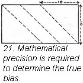

1930—Paris Frocks at Home
Lesson VII—Cutting Up Artfully
Cutting up in an approved manner
Have you ever had a dress which was distinctly uncomfortable? Perhaps the sleeves twisted on your arm or perhaps the shoulders pulled back or the skirt seemed to drag to one side. Somebody cut your dress incorrectly and it's a mighty serious matter since no human soul can make your dress act any way but contrary during the rest of its life.
This misfortune cannot befall you in your own dressmaking for you have a safeguard in your Butterick Deltor. You will not need to experiment with laying your pattern on material; the Butterick cutters did that before your Deltor was made.
You can't improve on the Deltor.
Please, please, don't try to improve on the layout shown on the Deltor. It just can't be done. You will surely run into a whole series of difficulties, the very least of which will be shortage of material. Have implicit faith in your tried and true Deltor.
What contractor ever started to build a house without his detailed drawing, his blue print? Your blue print is just inside your Butterick pattern envelope, only we call it the Deltor and it is exclusive with Butterick. It gives you complete and explicit directions for cutting, putting together and finishing your frock. Cutting layouts are a patented feature of your Deltor. There is a cutting layout for every width material suggested for your gown, as well as for every size. So, you see, every "cutting problem" has been solved for you before you start.
The reverse side of the Deltor shows by a series of pictures, with explanations, how to put your dress together, step-by-step, as well as how to finish edges and inside parts. You just cannot go wrong.
All set to go.
If you have adjusted your pattern for size and checked up on lengths as we asked you to do you are now ready to cut out your garment.
Don't think that you are laying your pattern on material simply according to someone's sketch of how it should be done. Every pattern we make is given to one of our cutters, who lays it out on material just as though he were going to cut out a dress. Carefully and skillfully he fits the pieces on. If the materials recommended for a design come in a number of different widths, say, twenty-seven, thirty-five, thirty-nine and fifty-four inches, our cutter must lay the pattern out on every one of these widths.
Troublesome widths are not recommended.
As he plans widths with the pattern pieces he may find that the dress cannot be cut easily or economically in certain widths of material. Possibly there will be many piecings coming in awkward places. If this should be the case, materials made in that troublesome width are not recommended on the envelope.
Our cutters, however, take all the time they need twisting and turning pattern pieces and experimenting with pieces in various positions on the cloth so that the most economical layout possible is finally made. We then examine our cutters' layout and it is approved; after that an artist makes an exact copy of the arrangement of the pieces. A reproduction of this sketch is what you work from.
This is only one step in making a Butterick Pattern, but it shows you why you are safe in depending upon the directions and diagrams that are furnished because every other step is worked out just as painstakingly.
No more experimenting.
The Deltor on page 39 is, of course, greatly reduced in size; the separate layouts on page 41 are almost the size they appear on the Deltor. You can readily see how they save you all the trouble of experimenting and how you are saved the possibility of making mistakes in cutting. You will never be in danger of cutting two sleeves for the same arm, one of the annoying accidents known to have befallen amateur dressmakers who have started without a Deltor.
All you have to do is pick out the particular layout for the view you are reproducing in your dress, and the one for the width of material you are using. Suppose, for example, you are making View A and that your size is 36, your material 39" wide. The layout you will use is the one centered in illustration 19. Just draw a circle around it. You can then always glance at the right one as you lay out your pattern.
Prepare the material for the worst.
Turn your attention now, for a few minutes, to your material. Open it up. Is it free of wrinkles? If not, press it with a warm iron.
This question of grain.
Measure your material to check on the width, also to see whether you have the full yardage required. Straighten each end of the material. Tear along the crosswise thread or cut along a thread if the material cannot be torn. This is to assure you that each end is on the crosswise grain. The selvedges show the lengthwise grain. Any thread parallel to the selvedge will be on the lengthwise grain. Grain of material is so important in cutting that we cannot refrain from reminding you of it again. Be sure the "grain" perforations in the pattern fall on the corresponding grain of material. There are only three possibilities: lengthwise of material, either thread or fold; crosswise of material, either thread or fold; bias of material. Your pattern and your Deltor will indicate clearly which one to use.
Here you can stretch a point.
Start with one end of your material laying it out on the left hand corner of your table and stretch it out smoothly along the table in line from left to right. Hold it out flat by laying weights at the corners and at intervals along the edge. Tailors sometimes thumb tack material to their cutting tables.
If the material has a right and wrong side, lay it right side up so that you see the design should there be any, and so that your marks through perforations made later, may be on the right side of the dress. If the dress has an off center closing or a one sided effect you will then be certain to cut each piece for the correct side of the body.
When your material has an "up and down" caused by nap or design, all pieces of the pattern must be laid with their tops in the same direction.
Let your selvedge be your guide.
Where the layout calls for a fold in the center of the material, bring one selvedge over to the other lying along the edge of the table. Put pins about 6" apart. Then pin the two selvedges together, smoothing the material as you do so. Avoid holding any fullness as you pin. Now smooth material over to the center fold and pin along that fold also.
Your layout often directs you to lay the pattern on a fold which is not in the center. However, don't let this cause you misgivings. Just measure the widest part of the piece of the pattern which must be cut on fold. Put a pin in your tape measure at this point. Now measure this distance in from the selvedge toward the center of the cloth and mark the line with an occasional pin. Fold along this line of pins and lay your pattern on this fold.
By the way, a word about pins. Be sure they are sharp, good quality pins; large heavy pins may leave holes in the material or even break threads.
Pins are usually put in at right angles to edges except where they are used to mark a fold line or curve.
When pinning your pieces on, first be sure to locate the perforations showing grain and attach the pattern along the proper grain. Then smooth the paper in all directions and pin along the edges. If the piece you are pinning is laid on a fold, pin it along the fold first, then smooth the rest of the pattern and pin. Do not spare pins. Remember the cut of the dress is vital to success.
Correct grain: the importance of following a thread.
We know that "grain" of material is so vital to your pleasure in wearing your new dress that we are showing you a sketch to impress you with how rabid we are on the subject.
By grain, as we have indicated, we mean the direction of the threads of which the material is woven. A lengthwise grain is one that follows a lengthwise or warp thread or is parallel to the selvedge of the cloth. A cross grain follows the woof or felling thread of the cloth and stretches from selvedge to selvedge. A bias grain cuts diagonally across the lengthwise and crosswise threads of the cloth. Your results will disappoint you if you try to get along with only an approximation of grain. All pieces of a garment must be cut exactly on the grain "to a thread."
Why sleeves sometimes twist.
People who work with fabrics develop a "sense of grain" both in their touch and with their eye. An experienced dressmaker or tailor could not bring herself to disregard grain, but beginners either through carelessness or because they think they can save an inch or two of material, sometimes do take liberties with it, very unwisely, and with tragic results. The sleeve which always twists or the skirt which drags to one side makes the garment practically unwearable and gives you a frustrated feeling which could have easily been avoided.
Pulling a thread doesn't mean pulling it out.
Therefore, follow a thread. In some cases pull a thread but don't pull it out, just pucker the line a tiny bit. Pressing will remove this slight pucker later. When straightening the end of materials the thread may be pulled out from selvedge to selvedge and the uneven end cut off along this line.
If you dare not pull a thread, measure.
When it is not safe or practicable to pull a thread the lengthwise grain can be found by measuring in equal distances from the selvedge at eight to ten inch intervals and marking these points with pins.
Test your fold.
As you fold along a straight lengthwise or crosswise grain, feel the character of the fold you are making. Pull it gently with your hands. If it feels scratchy or uneven, shift the fold slightly until you feel a straight firm line from hand to hand.
Don't be deceived.
Sometimes the crosswise grain seems to be playing you false. The line seems not to make right angles with the selvedge line. This is doubtless due to some stretching of the fabric at the mill when it was being wound on the boards. You will need to pull and stretch the fabric a little until the crosswise straight edge assumes the correct position.
True bias—a matter of triangles.
To find the true bias, begin with a corner of your piece which has a straight crosswise end and a convenient selvedge. Measure along the selvedge a number of inches, and mark. From the same corner measure the same distance along the straight crosswise end of the material. Mark this point. Lay a yard stick on these two points and draw a line on the material with tailor's chalk or mark with pins or basting thread. (Ill. 21, page 47.)
This is your true bias line.
Special suggestions for plaids and stripes.
Plaids, stripes and some materials with large flower designs must be made so as to avoid that mixed up look. Crosswise stripes should match wherever possible and prominent lines in plaids should be centered in both front and back.
Decide which stripe, plaid or figure is best for the center front and back. In general the most weighty feature of the design should be centered to keep the garment looking balanced.
Center that prominent stripe.
Place front and back patterns on the material along the center of this prominent stripe. Then see that lower corners of the armhole edges are the same distance below a crosswise stripe front and back.
Now lay the upper edge of the sleeve pattern against the front and back patterns as they rest on the material with notches of sleeve matching notches on the two other parts of the pattern. Mark with a pencil on the sleeve pattern the crosswise stripe nearest to the notch in the sleeve pattern.
When laying the sleeve pattern on the material see to it that this pencil line falls on a crosswise stripe. Lay the cuff pattern on the material before cutting the sleeve and mark the position of a lengthwise stripe on the cuff to correspond with a stripe on the sleeve.
There's a trick to cutting two of a kind.
After one of all these pieces has been cut, lay each one of them on the material with the right sides of material together and cut the second front, back, sleeve and cuff. Lay the pattern on the second set of cut pieces and mark notches and perforations.
And, of course, all pieces of the pattern must be laid on irregular plaids or flowered materials showing an up and down, with the top of the pieces in the same direction.
Cut all Butterick dresses at the edge of the paper.
Your scissors are nice sharp ones, I hope, with at least 7 inch blades. Some people like to use even larger ones. Small scissors produce choppy edges which fray and are somewhat hard to follow. As you cut keep your scissors down against your material, don't lift them. Use long, even cutting strokes and cut exactly on the edge of the paper pattern. When you use Butterick patterns you do not need to allow for a seam. All seams are allowed for you on the paper. Any additional allowance will make the garment too large for you and you will lose the nicety of its proportions. Neither must you complete the manufacturing process and trim off ragged paper edges.
The exception that proves the rule.
There is just one exception to this statement. If you are working on material which frays very badly you should allow one eighth of an inch on all seams except the large let-out seams. It is not necessary to make additional allowance on the let-out seams (you know they are wider than all the other seams) as they cover the amount the material frays.
As soon as you have cut a garment from loosely woven, scratchy material you should overcast or put a line of loose machine stitching around the curved arm hole edges and neck edges. This keeps the seam allowance from ravelling while you work on the garment.
When there is no pattern piece.
Sometimes bias bindings, ruffed, flower petals, or other trimming and finishing pieces which do not require a pattern are cut from pieces of material left over after the garment is cut. The Deltor layout shows where these may be cut to the best advantage.
Mark notches and perforations.
Be Scotch: use everything you paid for when you bought your pattern. Each notch and perforation was figured into the price of your pattern.
Two of the most essential places to mark are the center front and the center back, in both waist and skirt. You see your dress balances on you correctly if these lines fall straight down in both front and back. The best way to mark these lines is with a line of uneven basting, and these two lines, by the way, are the last two bastings you remove from your dress when you have completed all the finishing touches.
Mark notches with basting stitches.
The notches can be marked with two or three short basting stitches. (Ill. 24.) They may be cut but we don't advise this method since one is so apt to cut them too deeply—1/8 inch is ample. Sometimes even this shallow notch may prevent a slight alteration in the seam if that should become necessary.
Mark perforations with tailor's tacks.
The very best way to mark perforations is by using tailor's tacks since you can then mark them through two pieces of material at once. A very good plan is to mark all small perforations with one color thread and all large perforations with another color.
Tailor's tacks are thread marks placed in the material, made through the perforations in the tissue paper pattern.
This is the way to make tailor's tacks.
Use a double thread preferably without a knot. Take a stitch or two stitches one over the other through each perforation and down through both pieces of material if the material is double. Where there is a row of perforations close together like those at the shoulder seam or the underarm seam, take a row of stitches through each perforation and leave a loop between each perforation. (Ill. 25.) Cut the thread half way between the perforations and take the pattern off.
Now, to separate the two pieces of material, pull them slightly apart and snip through each tailor's tack between the two pieces of material. A little whisker of basting thread will be left in each piece indicating where each perforation comes in the pattern.